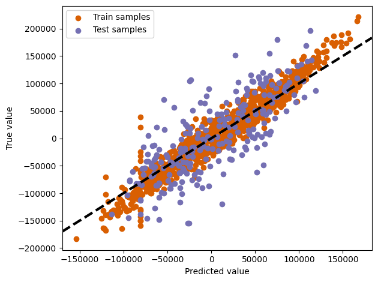

from pathlib import Path
import folium
import geopandas as gpd
import matplotlib.pyplot as plt
import pandas as pd
import sklearn
from shapely import wkt
from sklearn.ensemble import RandomForestRegressor
import geowrangler.area_zonal_stats as azs
import geowrangler.distance_zonal_stats as dzs
import geowrangler.raster_zonal_stats as rzs
import geowrangler.vector_zonal_stats as vzs
from geowrangler import grids
from geowrangler.datasets import geofabrik, ooklaExplore Poverty Mapping Machine Learning Models
Building poverty mapping machine learning (ML) models with Geowrangler

The aim of this notebook is to demonstrate how Geowrangler can be used to make the process of generating ML-ready or analytics-ready datasets from raw geospatial data easier.
Concretely, this shows a sample workflow for a wealth estimation model trained on a dataset constructed using:
- Ground Truth - DHS household clusters + wealth indices
- Features - Derived from Night Time Lights, OSM POIs, and Ookla internet speeds.
Note
The goal here is to showcase Geowrangler’s functions for geospatial data wrangling and feature engineering. Hence, this notebook keeps the ML modelling portions as simple as possible.
Set-up
Install and import some libraries.
Pre-requisite: Manual Data Download
# download data if not yet available
![ ! -e ../data/phl_adm0.geojson ] && curl -s -o ../data/phl_adm0.geojson https://raw.githubusercontent.com/thinkingmachines/geowrangler/master/data/phl_adm0.geojson
![ ! -e ../data/phl_dhs_cluster_level.csv ] && curl -s -o ../data/phl_dhs_cluster_level.csv https://raw.githubusercontent.com/thinkingmachines/geowrangler/master/data/phl_dhs_cluster_level.csv
![ ! -e ../data/phl_ntl.tif ] && curl -s -o ../data/phl_ntl.tif https://raw.githubusercontent.com/thinkingmachines/geowrangler/master/data/phl_ntl.tifDATA_DIR = Path("../data/")
# Auto-creates the folder if it does not exist
DATA_DIR.mkdir(parents=True, exist_ok=True)Your data directory should look something like this.
![]()
Data Preparation
DHS Ground Truth
The ground truth used in this demo notebook is from a DHS 2017 on-the-ground household survey conducted in the Philippines regarding the households’ socio-demographic information.
The file we provide is already a pre-processed version of the data that is aggregated on a household-cluster level, meaning the information cannot be tied back to any individual household. Specifically, we only provide a list of household clusters with their corresponding (jittered) GPS coordinate and DHS-computed wealth index.
Due to the sensitive nature of the data and the DHS program terms of use, we cannot provide the raw data. You can, however, request for access to raw data yourself on the DHS website. In that case, you can use GeoWrangler’s DHS processing utils help perform the said pre-processing.
Our first step is to create a GeoDataFrame from the data.
# Load ground truth data as a DataFrame first
GROUND_TRUTH_CSV = DATA_DIR / "phl_dhs_cluster_level.csv"
df = pd.read_csv(GROUND_TRUTH_CSV)
# Some of the coordinates in the data are invalid. This filters them out.
df = df[(df.longitude > 0) & (df.latitude > 0)]
# Create a GeoDataFrame from the longitude, latitude columns.
gdf = gpd.GeoDataFrame(
df, geometry=gpd.points_from_xy(df.longitude, df.latitude), crs="epsg:4326"
)
print(f"There are {len(gdf):,} clusters.")
gdf.head()There are 1,213 clusters.| DHSCLUST | Wealth Index | DHSID | longitude | latitude | geometry | |
|---|---|---|---|---|---|---|
| 0 | 1 | -31881.60870 | PH201700000001 | 122.109807 | 6.674652 | POINT (122.10981 6.67465) |
| 1 | 2 | -2855.37500 | PH201700000002 | 122.132027 | 6.662256 | POINT (122.13203 6.66226) |
| 2 | 3 | -57647.04762 | PH201700000003 | 122.179496 | 6.621822 | POINT (122.1795 6.62182) |
| 3 | 4 | -54952.66667 | PH201700000004 | 122.137965 | 6.485298 | POINT (122.13796 6.4853) |
| 5 | 6 | -80701.69565 | PH201700000006 | 121.916094 | 6.629457 | POINT (121.91609 6.62946) |
Next, we want to create a buffer around each cluster centroid that represents the area’s neighborhood. This is so we can engineer some features and characterize these neighborhoods using open data.
This is a design decision, but for this demo, we’ll create a circlular area with a 2km radius following the random displacement introduced by DHS to preserve household privacy.
# Make sure to convert to PH crs first for the buffer in meters, and then back to WGS84
gdf = gdf.to_crs("epsg:3123")
gdf.geometry = gdf.geometry.buffer(2000)
gdf = gdf.to_crs("epsg:4326")
gdf.head(5)| DHSCLUST | Wealth Index | DHSID | longitude | latitude | geometry | |
|---|---|---|---|---|---|---|
| 0 | 1 | -31881.60870 | PH201700000001 | 122.109807 | 6.674652 | POLYGON ((122.12789 6.67461, 122.1278 6.67284,... |
| 1 | 2 | -2855.37500 | PH201700000002 | 122.132027 | 6.662256 | POLYGON ((122.15011 6.66221, 122.15002 6.66044... |
| 2 | 3 | -57647.04762 | PH201700000003 | 122.179496 | 6.621822 | POLYGON ((122.19758 6.62178, 122.19749 6.62001... |
| 3 | 4 | -54952.66667 | PH201700000004 | 122.137965 | 6.485298 | POLYGON ((122.15604 6.48526, 122.15595 6.48349... |
| 5 | 6 | -80701.69565 | PH201700000006 | 121.916094 | 6.629457 | POLYGON ((121.93418 6.62942, 121.93409 6.62765... |
We can visualize what we’ve done so far on a map.
# Uncomment the next line to display an interactive map
# gdf.explore()Download data and load them into memory
Next, we’ll download some data from Ookla (internet speeds) and OSM (points of interest), which we’ll use to generate neighborhood characteristics to be used as ML features.
Ookla
Ookla has released global open data gathered from speedtests made on their platform. This gives us access to internet speed information across various geographies. In our context, this can give us a signal predictor.
First, let’s download a local copy of data on fixed internet in the 1st quarter of 2019 (earliest data available).
We can use GeoWrangler’s Ookla data utility to automatically download and cache the desired data on your machine given the type, year, and quarter.
This is just a simplification for the demo. In practice, you might want to aggregate data across multiple time periods or incorporate wireless data.
ookla_fixed_2019_q1_filepath = ookla.download_ookla_file(
type_="fixed", year="2019", quarter="1"
)
# This is where the downloaded file is located.
# By default this downloads to your data/ folder, but you can customize this.
ookla_fixed_2019_q1_filepath2024-08-12 22:32:01.747 | INFO | geowrangler.datasets.utils:urlretrieve:25 - Retrieving https://ookla-open-data.s3.us-west-2.amazonaws.com/parquet/performance/type=fixed/year=2019/quarter=1/2019-01-01_performance_fixed_tiles.parquet into data/2019-01-01_performance_fixed_tiles.parquet
100.00% [227835904/227829253 00:16<00:00]
Path('data/2019-01-01_performance_fixed_tiles.parquet')# This is a function to load and do some light pre-processing on the Ookla data.
def load_ookla_data(filename, mask=None):
# Ookla's parquet file doesn't seem to have geo metadata so need to read through pandas first
ookla_df = pd.read_parquet(filename)
ookla_gdf = gpd.GeoDataFrame(
ookla_df,
geometry=ookla_df["tile"].apply(lambda x: wkt.loads(x)),
crs="epsg:4326",
)
ookla_gdf = ookla_gdf.drop(columns=["tile"])
# Ookla's data files contain data for the whole world.
# For our case, we're retaining only tiles that intersect with the given mask.
# This is to speed-up any processing we do later on.
if mask is not None:
keep_cols = ookla_gdf.columns
ookla_gdf = ookla_gdf.sjoin(mask, how="inner", predicate="intersects")
ookla_gdf = ookla_gdf[keep_cols]
ookla_gdf.head()
# Convert kbps to mbps for easier reading
ookla_gdf["avg_d_mbps"] = ookla_gdf["avg_d_kbps"] / 1000
ookla_gdf["avg_u_mbps"] = ookla_gdf["avg_u_kbps"] / 1000
return ookla_gdfThe Ookla data is quite large, and takes around 5 minutes to load.
ookla_gdf = load_ookla_data(ookla_fixed_2019_q1_filepath, mask=gdf)CPU times: user 22.3 s, sys: 3.6 s, total: 25.9 s
Wall time: 28.3 sprint(
f"{len(ookla_gdf):,} Ookla data tiles retained that intersect with our DHS cluster neighborhoods."
)
ookla_gdf.head()17,245 Ookla data tiles retained that intersect with our DHS cluster neighborhoods.| quadkey | avg_d_kbps | avg_u_kbps | avg_lat_ms | tests | devices | geometry | avg_d_mbps | avg_u_mbps | |
|---|---|---|---|---|---|---|---|---|---|
| 4368240 | 1323011210311031 | 10 | 21 | 126 | 1 | 1 | POLYGON ((121.96472 20.4579, 121.97021 20.4579... | 0.010 | 0.021 |
| 4368240 | 1323011210311031 | 10 | 21 | 126 | 1 | 1 | POLYGON ((121.96472 20.4579, 121.97021 20.4579... | 0.010 | 0.021 |
| 4368240 | 1323011210311031 | 10 | 21 | 126 | 1 | 1 | POLYGON ((121.96472 20.4579, 121.97021 20.4579... | 0.010 | 0.021 |
| 4368240 | 1323011210311031 | 10 | 21 | 126 | 1 | 1 | POLYGON ((121.96472 20.4579, 121.97021 20.4579... | 0.010 | 0.021 |
| 4368241 | 1323011210311033 | 5931 | 10633 | 228 | 3 | 2 | POLYGON ((121.96472 20.45275, 121.97021 20.452... | 5.931 | 10.633 |
OSM (Open Street Maps)
One source of open data on points of interest is OSM. We’ll use the version of the data provided by Geofabrik vs accessing the OSM Overpass API. This allows us to not be bottlenecked by API calls.
Similar to Ookla, we can also use GeoWrangler’s OSM data download utils to download and cache OSM data on your machine. All you have to do is specify the country you want.
Geofabrik’s OSM data is a zip file containing different files for POIs, waterways, roads, etc. For this demo notebook, we’ll only use the POIs.
# This download can take around 1-2 minutes.
ph_osm_zip_path = geofabrik.download_geofabrik_region("philippines")
# This line unzips the zip file if we haven't done so yet.
!echo 'None' | unzip $ph_osm_zip_path -d data/ph_osm/2024-08-12 22:32:49.191 | INFO | geowrangler.datasets.utils:urlretrieve:25 - Retrieving https://download.geofabrik.de/asia/philippines-latest-free.shp.zip into data/philippines-latest-free.shp.zip
100.00% [1287127040/1287122270 06:08<00:00]
Archive: data/philippines-latest-free.shp.zip
inflating: data/ph_osm/README
extracting: data/ph_osm/gis_osm_buildings_a_free_1.cpg
inflating: data/ph_osm/gis_osm_buildings_a_free_1.dbf
inflating: data/ph_osm/gis_osm_buildings_a_free_1.prj
inflating: data/ph_osm/gis_osm_buildings_a_free_1.shp
inflating: data/ph_osm/gis_osm_buildings_a_free_1.shx
extracting: data/ph_osm/gis_osm_landuse_a_free_1.cpg
inflating: data/ph_osm/gis_osm_landuse_a_free_1.dbf
inflating: data/ph_osm/gis_osm_landuse_a_free_1.prj
inflating: data/ph_osm/gis_osm_landuse_a_free_1.shp
inflating: data/ph_osm/gis_osm_landuse_a_free_1.shx
extracting: data/ph_osm/gis_osm_natural_a_free_1.cpg
inflating: data/ph_osm/gis_osm_natural_a_free_1.dbf
inflating: data/ph_osm/gis_osm_natural_a_free_1.prj
inflating: data/ph_osm/gis_osm_natural_a_free_1.shp
inflating: data/ph_osm/gis_osm_natural_a_free_1.shx
extracting: data/ph_osm/gis_osm_natural_free_1.cpg
inflating: data/ph_osm/gis_osm_natural_free_1.dbf
inflating: data/ph_osm/gis_osm_natural_free_1.prj
inflating: data/ph_osm/gis_osm_natural_free_1.shp
inflating: data/ph_osm/gis_osm_natural_free_1.shx
extracting: data/ph_osm/gis_osm_places_a_free_1.cpg
inflating: data/ph_osm/gis_osm_places_a_free_1.dbf
inflating: data/ph_osm/gis_osm_places_a_free_1.prj
inflating: data/ph_osm/gis_osm_places_a_free_1.shp
inflating: data/ph_osm/gis_osm_places_a_free_1.shx
extracting: data/ph_osm/gis_osm_places_free_1.cpg
inflating: data/ph_osm/gis_osm_places_free_1.dbf
inflating: data/ph_osm/gis_osm_places_free_1.prj
inflating: data/ph_osm/gis_osm_places_free_1.shp
inflating: data/ph_osm/gis_osm_places_free_1.shx
extracting: data/ph_osm/gis_osm_pofw_a_free_1.cpg
inflating: data/ph_osm/gis_osm_pofw_a_free_1.dbf
inflating: data/ph_osm/gis_osm_pofw_a_free_1.prj
inflating: data/ph_osm/gis_osm_pofw_a_free_1.shp
inflating: data/ph_osm/gis_osm_pofw_a_free_1.shx
extracting: data/ph_osm/gis_osm_pofw_free_1.cpg
inflating: data/ph_osm/gis_osm_pofw_free_1.dbf
inflating: data/ph_osm/gis_osm_pofw_free_1.prj
inflating: data/ph_osm/gis_osm_pofw_free_1.shp
inflating: data/ph_osm/gis_osm_pofw_free_1.shx
extracting: data/ph_osm/gis_osm_pois_a_free_1.cpg
inflating: data/ph_osm/gis_osm_pois_a_free_1.dbf
inflating: data/ph_osm/gis_osm_pois_a_free_1.prj
inflating: data/ph_osm/gis_osm_pois_a_free_1.shp
inflating: data/ph_osm/gis_osm_pois_a_free_1.shx
extracting: data/ph_osm/gis_osm_pois_free_1.cpg
inflating: data/ph_osm/gis_osm_pois_free_1.dbf
inflating: data/ph_osm/gis_osm_pois_free_1.prj
inflating: data/ph_osm/gis_osm_pois_free_1.shp
inflating: data/ph_osm/gis_osm_pois_free_1.shx
extracting: data/ph_osm/gis_osm_railways_free_1.cpg
inflating: data/ph_osm/gis_osm_railways_free_1.dbf
inflating: data/ph_osm/gis_osm_railways_free_1.prj
inflating: data/ph_osm/gis_osm_railways_free_1.shp
inflating: data/ph_osm/gis_osm_railways_free_1.shx
extracting: data/ph_osm/gis_osm_roads_free_1.cpg
inflating: data/ph_osm/gis_osm_roads_free_1.dbf
inflating: data/ph_osm/gis_osm_roads_free_1.prj
inflating: data/ph_osm/gis_osm_roads_free_1.shp
inflating: data/ph_osm/gis_osm_roads_free_1.shx
extracting: data/ph_osm/gis_osm_traffic_a_free_1.cpg
inflating: data/ph_osm/gis_osm_traffic_a_free_1.dbf
inflating: data/ph_osm/gis_osm_traffic_a_free_1.prj
inflating: data/ph_osm/gis_osm_traffic_a_free_1.shp
inflating: data/ph_osm/gis_osm_traffic_a_free_1.shx
extracting: data/ph_osm/gis_osm_traffic_free_1.cpg
inflating: data/ph_osm/gis_osm_traffic_free_1.dbf
inflating: data/ph_osm/gis_osm_traffic_free_1.prj
inflating: data/ph_osm/gis_osm_traffic_free_1.shp
inflating: data/ph_osm/gis_osm_traffic_free_1.shx
extracting: data/ph_osm/gis_osm_transport_a_free_1.cpg
inflating: data/ph_osm/gis_osm_transport_a_free_1.dbf
inflating: data/ph_osm/gis_osm_transport_a_free_1.prj
inflating: data/ph_osm/gis_osm_transport_a_free_1.shp
inflating: data/ph_osm/gis_osm_transport_a_free_1.shx
extracting: data/ph_osm/gis_osm_transport_free_1.cpg
inflating: data/ph_osm/gis_osm_transport_free_1.dbf
inflating: data/ph_osm/gis_osm_transport_free_1.prj
inflating: data/ph_osm/gis_osm_transport_free_1.shp
inflating: data/ph_osm/gis_osm_transport_free_1.shx
extracting: data/ph_osm/gis_osm_water_a_free_1.cpg
inflating: data/ph_osm/gis_osm_water_a_free_1.dbf
inflating: data/ph_osm/gis_osm_water_a_free_1.prj
inflating: data/ph_osm/gis_osm_water_a_free_1.shp
inflating: data/ph_osm/gis_osm_water_a_free_1.shx
extracting: data/ph_osm/gis_osm_waterways_free_1.cpg
inflating: data/ph_osm/gis_osm_waterways_free_1.dbf
inflating: data/ph_osm/gis_osm_waterways_free_1.prj
inflating: data/ph_osm/gis_osm_waterways_free_1.shp
inflating: data/ph_osm/gis_osm_waterways_free_1.shx # Uncomment the ff line to see all the available OSM files aside from POIs.
# !ls data/ph_osmph_osm_pois_filepath = "data/ph_osm/gis_osm_pois_free_1.shp"
ph_osm = gpd.read_file(ph_osm_pois_filepath)print(f"There are {len(ph_osm)} OSM POIs.")
ph_osm.head()There are 150311 OSM POIs.| osm_id | code | fclass | name | geometry | |
|---|---|---|---|---|---|
| 0 | 21717820 | 2907 | camera_surveillance | None | POINT (121.0212 14.57608) |
| 1 | 21717872 | 2722 | museum | Ayala Museum | POINT (121.02324 14.55358) |
| 2 | 24078959 | 2907 | camera_surveillance | None | POINT (121.05945 14.60098) |
| 3 | 24797511 | 2542 | bicycle_shop | Christine Sports Cycle Marketing | POINT (120.99506 14.55224) |
| 4 | 24797535 | 2518 | beverages | G and K wine | POINT (120.99267 14.55285) |
Feature Engineering
Now that we’ve prepared the DHS data and loaded Ookla and OSM data into memory, we’re ready to generate some neighborhood features for our ML model.
For convenience, we’re wrapping all the feature engineering code in functions so we can re-use them later when we apply the model to the whole country.
Note: if you are modifying the feature engineering portions, it is recommended to run the whole section end-to-end. This ensures you’re starting fresh from a new copy of the DHS clusters GeoDataFrame. This also ensures the function definitions are up-to-date, and can be re-used properly later for model rollout.
# We'll make a copy of the GDF to avoid overwriting the original DHS GeoDataFrame.
gdf_with_features = gdf.copy()OSM
Our goal with OSM data is to generate neighborhood characteristics based on counts and distance to certain POIs, such as schools, hospitals, etc.
To do this, we utilize GeoWrangler’s vector zonal stats and distance zonal stats features.
# Uncomment the ff. line if you want to see the different POI classes available
# ph_osm.fclass.sort_values().unique()def generate_osm_features(aoi, osm, metric_crs="epsg:3123"):
aoi = aoi.copy()
# GeoWrangler: Count number of all POIs per tile
aoi = vzs.create_zonal_stats(
aoi,
osm,
overlap_method="intersects",
aggregations=[{"func": "count", "output": "poi_count", "fillna": True}],
)
# Count specific aoi types
poi_types = ["restaurant", "school", "bank", "supermarket", "mall", "atm"]
for poi_type in poi_types:
# GeoWrangler: Count with vector zonal stats
aoi = vzs.create_zonal_stats(
aoi,
osm[osm["fclass"] == poi_type],
overlap_method="intersects",
aggregations=[
{"func": "count", "output": f"{poi_type}_count", "fillna": True}
],
)
# GeoWrangler: Distance with distance zonal stats
col_name = f"{poi_type}_nearest"
aoi = dzs.create_distance_zonal_stats(
aoi.to_crs(metric_crs),
osm[osm["fclass"] == poi_type].to_crs(metric_crs),
max_distance=10_000,
aggregations=[],
distance_col=col_name,
).to_crs("epsg:4326")
# If no POI was found within the distance limit, set the distance to a really high value
aoi[col_name] = aoi[col_name].fillna(value=999999)
return aoigdf_with_features = generate_osm_features(gdf_with_features, ph_osm)CPU times: user 746 ms, sys: 29.4 ms, total: 775 ms
Wall time: 793 msgdf_with_features.head()| DHSCLUST | Wealth Index | DHSID | longitude | latitude | geometry | poi_count | restaurant_count | restaurant_nearest | school_count | school_nearest | bank_count | bank_nearest | supermarket_count | supermarket_nearest | mall_count | mall_nearest | atm_count | atm_nearest | |
|---|---|---|---|---|---|---|---|---|---|---|---|---|---|---|---|---|---|---|---|
| 0 | 1 | -31881.60870 | PH201700000001 | 122.109807 | 6.674652 | POLYGON ((122.12789 6.67461, 122.1278 6.67284,... | 0.0 | 0.0 | 3152.996430 | 0.0 | 1392.503631 | 0.0 | 1764.736950 | 0.0 | 999999.0 | 0.0 | 999999.0 | 0.0 | 999999.000000 |
| 1 | 2 | -2855.37500 | PH201700000002 | 122.132027 | 6.662256 | POLYGON ((122.15011 6.66221, 122.15002 6.66044... | 6.0 | 0.0 | 5788.165918 | 0.0 | 3601.132502 | 1.0 | 0.000000 | 0.0 | 999999.0 | 0.0 | 999999.0 | 0.0 | 999999.000000 |
| 2 | 3 | -57647.04762 | PH201700000003 | 122.179496 | 6.621822 | POLYGON ((122.19758 6.62178, 122.19749 6.62001... | 0.0 | 0.0 | 999999.000000 | 0.0 | 642.871037 | 0.0 | 4026.300327 | 0.0 | 999999.0 | 0.0 | 999999.0 | 0.0 | 999999.000000 |
| 3 | 4 | -54952.66667 | PH201700000004 | 122.137965 | 6.485298 | POLYGON ((122.15604 6.48526, 122.15595 6.48349... | 0.0 | 0.0 | 999999.000000 | 0.0 | 2287.839903 | 0.0 | 999999.000000 | 0.0 | 999999.0 | 0.0 | 999999.0 | 0.0 | 999999.000000 |
| 5 | 6 | -80701.69565 | PH201700000006 | 121.916094 | 6.629457 | POLYGON ((121.93418 6.62942, 121.93409 6.62765... | 0.0 | 0.0 | 8408.925995 | 0.0 | 3930.606257 | 0.0 | 8332.324084 | 0.0 | 999999.0 | 0.0 | 999999.0 | 0.0 | 8311.332736 |
Ookla
Our goal with Ookla data is to generate neighborhood characteristics based on internet speeds (download, upload, latency).
To do this, we utilize GeoWrangler’s area zonal stats feature.
def generate_ookla_features(aoi, ookla_gdf, metric_crs="epsg:3123"):
aoi = aoi.copy()
orig_aoi_crs = aoi.crs
aoi = aoi.to_crs(metric_crs)
ookla_gdf = ookla_gdf.to_crs(metric_crs)
# For better formatting, rename some columns
ookla_gdf = ookla_gdf.rename(
columns={"avg_d_mbps": "d_mbps", "avg_u_mbps": "u_mbps", "avg_lat_ms": "lat_ms"}
)
# GeoWrangler: Compute stats on the various columns
aoi = azs.create_area_zonal_stats(
aoi,
ookla_gdf,
aggregations=[
# Count number of devices in the area
dict(column="devices", func=["raw_sum"], fillna=True),
# Get stats on the download speeds
dict(
column="d_mbps",
func=["imputed_mean", "max", "min", "std"],
fillna=[True, True, True, True],
),
# Get stats on the upload speeds
dict(
column="u_mbps",
func=["imputed_mean", "max", "min", "std"],
fillna=[True, True, True, True],
),
],
# Don't include the land area that intersected as a column
include_intersect=False,
# Don't set minimum values to 0 if the neighborhood's area doesn't fully intersect with Ookla tiles.
fix_min=False,
)
aoi = aoi.fillna(value="0")
aoi = aoi.to_crs(orig_aoi_crs)
return aoigdf_with_features = generate_ookla_features(gdf_with_features, ookla_gdf)CPU times: user 1.01 s, sys: 27.6 ms, total: 1.04 s
Wall time: 1.05 sgdf_with_features.head()| DHSCLUST | Wealth Index | DHSID | longitude | latitude | geometry | poi_count | restaurant_count | restaurant_nearest | school_count | ... | atm_nearest | devices_sum | d_mbps_mean | d_mbps_max | d_mbps_min | d_mbps_std | u_mbps_mean | u_mbps_max | u_mbps_min | u_mbps_std | |
|---|---|---|---|---|---|---|---|---|---|---|---|---|---|---|---|---|---|---|---|---|---|
| 0 | 1 | -31881.60870 | PH201700000001 | 122.109807 | 6.674652 | POLYGON ((122.12789 6.67461, 122.1278 6.67284,... | 0.0 | 0.0 | 3152.996430 | 0.0 | ... | 999999.000000 | 0.0 | 0.000000 | 0.000 | 0.000 | 0.000000 | 0.000000 | 0.000 | 0.000 | 0.000000 |
| 1 | 2 | -2855.37500 | PH201700000002 | 122.132027 | 6.662256 | POLYGON ((122.15011 6.66221, 122.15002 6.66044... | 6.0 | 0.0 | 5788.165918 | 0.0 | ... | 999999.000000 | 38.0 | 0.401851 | 14.628 | 2.177 | 4.982053 | 0.255031 | 6.867 | 1.866 | 1.753667 |
| 2 | 3 | -57647.04762 | PH201700000003 | 122.179496 | 6.621822 | POLYGON ((122.19758 6.62178, 122.19749 6.62001... | 0.0 | 0.0 | 999999.000000 | 0.0 | ... | 999999.000000 | 0.0 | 0.000000 | 0.000 | 0.000 | 0.000000 | 0.000000 | 0.000 | 0.000 | 0.000000 |
| 3 | 4 | -54952.66667 | PH201700000004 | 122.137965 | 6.485298 | POLYGON ((122.15604 6.48526, 122.15595 6.48349... | 0.0 | 0.0 | 999999.000000 | 0.0 | ... | 999999.000000 | 0.0 | 0.000000 | 0.000 | 0.000 | 0.000000 | 0.000000 | 0.000 | 0.000 | 0.000000 |
| 5 | 6 | -80701.69565 | PH201700000006 | 121.916094 | 6.629457 | POLYGON ((121.93418 6.62942, 121.93409 6.62765... | 0.0 | 0.0 | 8408.925995 | 0.0 | ... | 8311.332736 | 0.0 | 0.000000 | 0.000 | 0.000 | 0.000000 | 0.000000 | 0.000 | 0.000 | 0.000000 |
5 rows × 28 columns
Night Time Lights
Lastly, we’ll generate features based on night time lights. GeoWrangler provides a raster zonal stats function that acts as a thin layer on top of rasterio’s rasterstats function. It provides a little convenience in terms of formatting and automatically joins back the features to your input GeoDataFrame.
def generate_ntl_features(aoi, raster_path):
aoi = aoi.copy()
aoi = rzs.create_raster_zonal_stats(
aoi,
raster_path,
aggregation=dict(
func=["mean", "min", "max", "std"],
column="ntl",
),
extra_args=dict(nodata=0),
)
aoi = aoi.fillna(0)
return aoigdf_with_features = generate_ntl_features(gdf_with_features, DATA_DIR / "phl_ntl.tif")CPU times: user 1.24 s, sys: 198 ms, total: 1.44 s
Wall time: 1.57 sVisualize the final dataset
Finally, let’s visualize our cluster neighborhoods now with the generated features. Hover over each cluster to see its data.
# Visualize the clusters with the generated features
# gdf_with_features.explore()ML Training
In this section, we will now train an ML model to predict the wealth index for an area given its features.
Prepare data into X, y and generate train/test partitions
# For convenience, store the list of features in a variable. Remove all extraneous columns.
feature_cols = gdf_with_features.drop(
columns=["DHSCLUST", "DHSID", "Wealth Index", "longitude", "latitude", "geometry"]
).columns
# Separate data (X) and the target (y)
X = gdf_with_features[feature_cols]
y = gdf_with_features["Wealth Index"]
# Bin y into 5 buckets for stratification when splitting the dataset
cat_y = pd.cut(y, bins=5, labels=list(range(1, 6)))
# Generate train and test partitions
X_train, X_test, y_train, y_test = sklearn.model_selection.train_test_split(
X, y, test_size=0.2, random_state=2022, stratify=cat_y
)X_train.head()| poi_count | restaurant_count | restaurant_nearest | school_count | school_nearest | bank_count | bank_nearest | supermarket_count | supermarket_nearest | mall_count | ... | d_mbps_min | d_mbps_std | u_mbps_mean | u_mbps_max | u_mbps_min | u_mbps_std | ntl_mean | ntl_min | ntl_max | ntl_std | |
|---|---|---|---|---|---|---|---|---|---|---|---|---|---|---|---|---|---|---|---|---|---|
| 944 | 1.0 | 0.0 | 4332.445808 | 1.0 | 0.000000 | 0.0 | 999999.000000 | 0.0 | 5595.357740 | 0.0 | ... | 0.000 | 0.000000 | 0.000000 | 0.000 | 0.000 | 0.000000 | 0.279636 | 0.279636 | 0.279636 | 0.000000 |
| 328 | 1203.0 | 143.0 | 0.000000 | 23.0 | 0.000000 | 73.0 | 0.000000 | 14.0 | 0.000000 | 1.0 | ... | 8.948 | 6.519399 | 0.033496 | 30.564 | 2.496 | 5.933372 | 9.881545 | 4.587300 | 17.190298 | 2.768707 |
| 696 | 0.0 | 0.0 | 4396.530482 | 0.0 | 7331.181601 | 0.0 | 999999.000000 | 0.0 | 999999.000000 | 0.0 | ... | 0.000 | 0.000000 | 0.000000 | 0.000 | 0.000 | 0.000000 | 0.000000 | 0.000000 | 0.000000 | 0.000000 |
| 155 | 2.0 | 0.0 | 352.510311 | 0.0 | 669.141767 | 0.0 | 2606.478381 | 0.0 | 2566.227871 | 0.0 | ... | 1.215 | 31.305303 | 0.863634 | 151.303 | 0.106 | 35.998549 | 0.299591 | 0.182455 | 0.519110 | 0.125637 |
| 614 | 286.0 | 12.0 | 0.000000 | 4.0 | 0.000000 | 14.0 | 0.000000 | 8.0 | 0.000000 | 1.0 | ... | 2.986 | 6.722738 | 0.174738 | 32.774 | 0.527 | 7.027801 | 0.335981 | 0.216280 | 0.543996 | 0.084581 |
5 rows × 26 columns
y_train.head()944 -27114.20833
328 175912.44440
696 -29987.93750
155 75826.10526
614 54849.37500
Name: Wealth Index, dtype: float64Evaluation Function
We define an evaluation function that computes R^2 and makes a plot of the actual vs predicted values.
def evaluate(model, X_train, X_test, y_train, y_test):
# R^2
train_predictions = model.predict(X_train)
print("Train R2 score:", sklearn.metrics.r2_score(y_train, train_predictions))
test_predictions = model.predict(X_test)
print("Test R2 score:", sklearn.metrics.r2_score(y_test, test_predictions))
# Plot
# Train and test predictions vs actual values
plt.scatter(train_predictions, y_train, label="Train samples", c="#d95f02")
plt.scatter(test_predictions, y_test, label="Test samples", c="#7570b3")
# Identity line
xpoints = ypoints = plt.xlim()
plt.plot(
xpoints, ypoints, linestyle="--", color="k", lw=3, scalex=False, scaley=False
)
# Labels and legends
plt.xlabel("Predicted value")
plt.ylabel("True value")
plt.legend()
plt.tight_layout()
plt.show()Fit and Evaluate Model
For ML modelling, let’s fit a simple random forest regressor.
As mentioned, we are keeping the ML modelling as simple as possible in this notebook. This is definitely not the best-performing wealth estimation model out there, but should be decent enough for demo purposes.
model = RandomForestRegressor()
model.fit(X_train, y_train)
evaluate(model, X_train, X_test, y_train, y_test)Train R2 score: 0.9244278211179482
Test R2 score: 0.5882081532536176
ML Rollout (Phl)
Now that we have a wealth estimation model, we can apply it to the whole country.
Generate country-wide tiles
First, we need to split the country up into smaller areas.
That usually means generating grid tiles or hex tiles for your area of interest. In this notebook, we’ll generate Bing tiles at zoom level 13 (which has the closest area to our 2km neighborhoods in training).
GeoWrangler provides various grid generation utilities for these different scenarios.
# Read in the admin boundary for PHL.
# This file is a simplified version of the admin boundary to make the file size smaller and load times faster.
phl_adm = gpd.read_file(f"{DATA_DIR}/phl_adm0.geojson")
# Uncomment this line if you want to visualize it
# phl_adm.explore()The generation can take around 1-2 minutes.
phl_tiles = grids.BingTileGridGenerator(13).generate_grid(phl_adm)
print(f"There are {len(phl_tiles):,} tiles.")
phl_tiles.head()There are 16,257 tiles.
CPU times: user 7.34 s, sys: 57.5 ms, total: 7.39 s
Wall time: 7.5 s| quadkey | geometry | |
|---|---|---|
| 0 | 1323230031202 | POLYGON ((119.17969 4.65308, 119.17969 4.69688... |
| 1 | 1323230030300 | POLYGON ((119.00391 4.69688, 119.00391 4.74068... |
| 2 | 1323230030311 | POLYGON ((119.13574 4.69688, 119.13574 4.74068... |
| 3 | 1323230031201 | POLYGON ((119.22363 4.69688, 119.22363 4.74068... |
| 4 | 1323212220302 | POLYGON ((118.30078 6.05316, 118.30078 6.09686... |
Feature Engineering
This part is simpler, as we’re just re-using the feature engineering functions we previously created. Note though that we are generating features for a bigger area, so the runtime is a little longer (in total should be within 2 minutes).
phl_tiles_with_features = phl_tiles.copy()phl_tiles_with_features = generate_osm_features(phl_tiles_with_features, ph_osm)CPU times: user 1.17 s, sys: 39.2 ms, total: 1.21 s
Wall time: 1.24 sphl_tiles_with_features = generate_ookla_features(phl_tiles_with_features, ookla_gdf)CPU times: user 465 ms, sys: 16.3 ms, total: 481 ms
Wall time: 485 msphl_tiles_with_features = generate_ntl_features(
phl_tiles_with_features, f"{DATA_DIR}/phl_ntl.tif"
)CPU times: user 13.4 s, sys: 1.8 s, total: 15.2 s
Wall time: 15.4 sMake predictions and viz output
Finally, we are ready to apply the model and make predictions throughout the whole country. We can also visualize it on a Cholorpleth map.
phl_tiles_with_features["predicted_wealth_index"] = model.predict(
phl_tiles_with_features[feature_cols]
)def viz_chloropleth(gdf, target_feature="predicted_wealth_index"):
m = folium.Map(location=[14.6091, 121.0223], width=1000, height=800, zoom_start=7)
subset = gdf.copy()
subset["id"] = list(range(len(subset)))
folium.Choropleth(
geo_data=subset,
data=subset,
name="Wealth Predictions",
columns=["id", target_feature],
key_on="feature.properties.id",
fill_color="Spectral",
legend_name=target_feature,
).add_to(m)
return mVisualize the output
# Uncomment the line below to visualize rollout
# viz_chloropleth(phl_tiles_with_features)